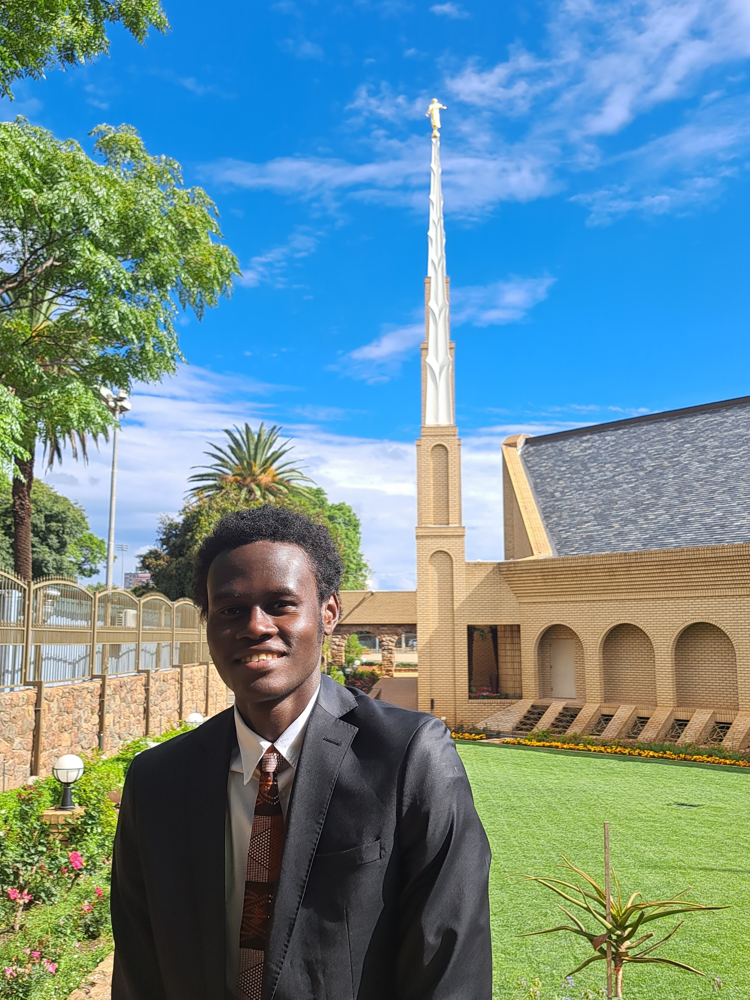

Loris Jared Ndonga | WDD 130

Greetings, I am Jared from the Republic of Congo and currently living in South Africa.
Upon graduating from high school, I decided to devote a year to improving my English proficiency.
My next step was to volunteer to serve on a full-time mission for the Church of Jesus Christ of Latter-Day Saints.
This led me to learn more from different sources, and I am now on an exciting journey in software development.